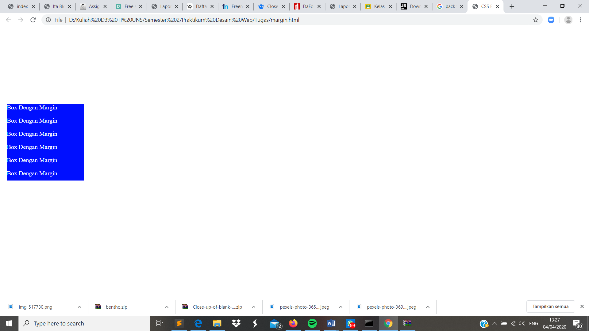

Margin
Pendahuluan
Setelah membuat ukuran tampilab berupa weight dan height. Kita perlu menambahkan atribut lain pada css kita yaitu Margin. Margin adalah jarak tepi pada sebuah elemen bagian luar. Margin juga dapat dibagi menjadi 4 untuk mempermudah jika ingin berinovasi yakni margin-top, margin-right, margin-bottom, dan margin-left. Margin dapat menggunakan velue positif maupun negatif.
Codingan
<!DOCTYPE html>
<html lang="id">
<head>
<meta charset="utf-8">
<meta name="viewsport" content="width=device-width, initial-scale=1.0">
<title>CSS Eksternal Style</title>
<style type="text/css">
#box{
width: 200px;
height: 200px;
background-color: #000FFF;
color: #FFFFFF;
margin:200px 10px;
}
</style>
</head>
<body>
<div id="box">
<p>Box Dengan Margin</p>
<p>Box Dengan Margin</p>
<p>Box Dengan Margin</p>
<p>Box Dengan Margin</p>
<p>Box Dengan Margin</p>
<p>Box Dengan Margin</p>
</div>
</body>
</html>
Kode CSS Internal
<style type="text/css">
#box{
width: 200px;
height: 200px;
background-color: #000FFF;
color: #FFFFFF;
margin:200px 10px;
}
</style>
Hasil Screenshot

Analisis
Pada percobaan membuat margin ini kita dapat menentukan berapa jarak tepi yang kita inginkan. Pada percobaan ini saya menggunakan margin shorthan 1 200px 10px. Yang memiliki arti atas-bawah, kanan-kiri. Olehkarenanya posisi yang ditampilkan oleh box berada di sebelah kiri tengah.